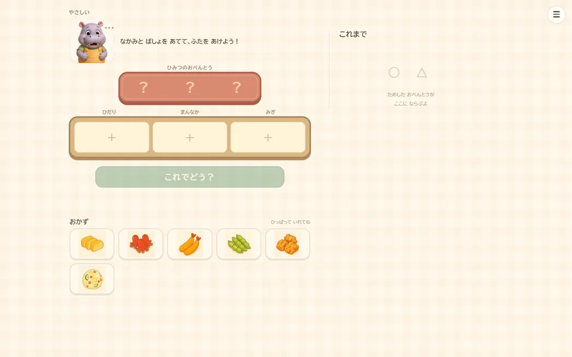

このゲームについて
候補のおかずから三つを選んでおべんとうに入れ、○と△で示される結果を確かめます。これまでに試した並びを見比べながら、ひみつのおべんとうのおかずと場所を筋道立てて考えます。
遊び方
三つのおかずを選んで、左・真ん中・右のおべんとうへ入れます。○はおかずも場所も正解、△はおかずだけが正解です。練習でヒントの読み方を覚えたら、やさしい・ふつう・むずかしいから選んで何度でも挑戦できます。
ゲーム中に行うこと
- ○と△のヒントを読み取る
- これまでの記録を比べておかずと場所を推理する
ここではゲーム中の活動を説明しています。能力の向上や、特定の効果・改善を保証するものではありません。